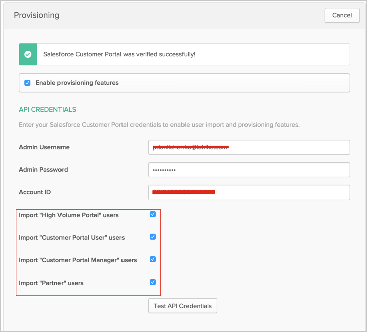
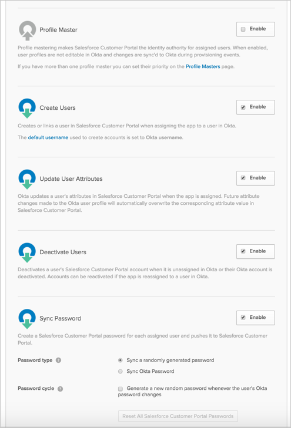
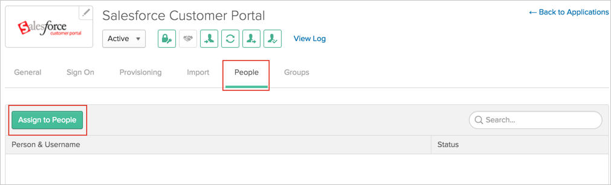
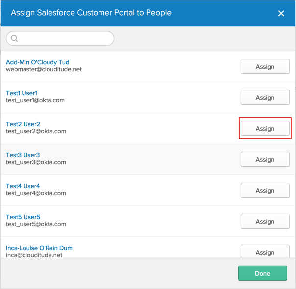
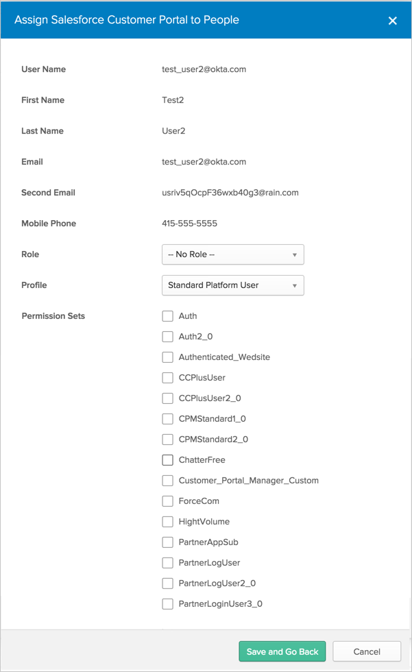
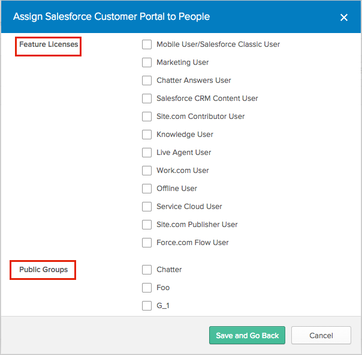
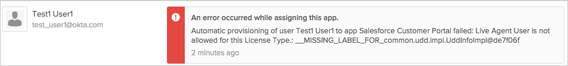
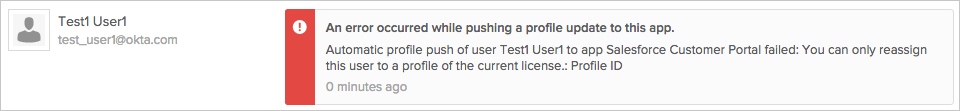
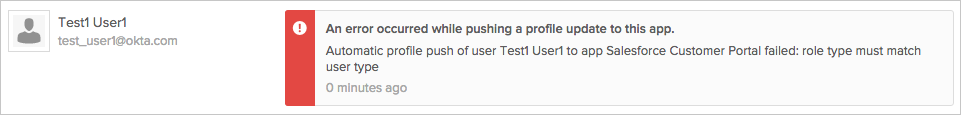
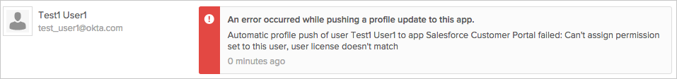

This guide provides the steps required to configure Provisioning for Salesforce Customer Portal, and includes the following sections:
Import New Users
Import Profile Updates
Push New Users
Push Profile Updates
Push User Deactivation
Sync Okta Password
Profile Mastering
Complete the following before you configure provisioning for Salesforce Customer Portal:
Create an administrator account in Salesforce. You will use this account’s username and password to configure the Salesforce Customer Portal app in Okta. When you create an administrator account, Salesforce will provide you a token.
Note: Every time you reset this account’s password, Salesforce will provide you with a new token, and you need to edit the Salesforce app’s Provisioning settings in Okta using the new password/token as described below. See TIPS.
Determine your Salesforce Organization ID:
Login into your Salesforce account as an administrator.
Click on your name in the top right and select Setup from the dropdown menu.
Select Company Profile > Company Information in the left sidebar.
Your Organization ID will be displayed in a field on this screen.
Determine the Salesforce Portal ID of the Salesforce portal you would like to connect to Okta:
Login into your Salesforce account as an administrator.
Click on your name in the top right and select Setup from the dropdown menu.
Select Customize > Customer Portal > Customer Portal Settings in the left sidebar.
Select the portal you are connecting to Okta from the list.
The Portal ID will be displayed in a field on this screen.
Determine the Salesforce Account ID under which newly created contacts will be placed when provisioned from Okta:
Navigate to the specific account you would like to use.
The Account ID will be visible in the URL bar at the top of your browser as the path parameter.
You are now ready to configure your Provisioning settings as follows:
In the API Credentials section, enter the Username, Password and Token associated with your Salesforce Administrator account. Also enter the Account ID you would like newly provisioned contacts to be associated with.
Note: Simply append the token Salesforce provided to you to your password, no spaces or other characters.
To avoid breaking the integration when the password is reset, use a dedicated API account for connecting Okta to Salesforce.
Do not enable delegated authentication in Salesforce for the API user specified here.
Select the user types you want to import from Salesforce Customer Portal: High Volume Portal, Customer Portal User, Customer Portal Manager or Partner:

Click Test API Credentials; if successful, a verification message appears at the top of the screen, as shown above.
Scroll down and specify the type of Provisioning Features you want to enable.
Note: As part of provisioning each new portal user, Okta creates a new contact in Salesforce associated with the account you specify in the AccountID field. This new contact contains the user's name and email address. This contact is necessary because Portal users in Salesforce must be associated with a contact.

Click Save.
To assign users to the Salesforce Customer Portal app:

Then, in the Assign Salesforce Customer Portal to People dialog, select a user, then click the Assign button:

You can set the Profile, Role, Federation ID and Permission Sets for each user:

If you would like to enable support for Feature Licenses and Public Groups for Salesforce, contact Okta Support and ask them to enable it for your organization.
When Okta Support has enabled that functionality for you, you need to create and configure new Salesforce Customer Portal application in order to work with the new user attributes.
This is a known limitation.
You can manage Feature Licenses and Public Groups for users by enabling the corresponding checkboxes on the User Assignment page.
Note that Feature Licenses depend on the selected user Profile. If you select a Feature License that is not supported by the selected Profile you will encounter an error, as described in Troubleshooting Tips.

Error when you try to assign a Feature License (for example, Live Agent User) that is not applicable for the current user License:

Error when you try to assign a Profile to a user that does not exist in the License:

Error when you try to assign a Role that is not supported by the current User License:

Error when you try to assign a permission set to a User with a License that doesn't support the permission set:
